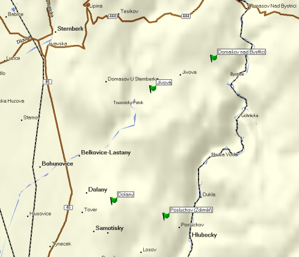

| Historisches Land: | Mähren |
| Bestandteile der Herrschaft Hradisko: | Hradisko Klášterní, Bohuňovice, Březce, Bystročice, Černovír, Domašov, Droždín, Hablov, Hejčín, Chomutov, Jáchymov, Jílkov, Svatý Kopeček, Lašťany, Lhota, Liboš, Lošov, Mezice, Náklo, Vojnice, Olšany, Pavlovice, Radíkov, Řepčín, Samotíšky, Sedlisko, Senice, Skalov, Střeň, Štěpánov, Těšetice, Těšíkov, Topolany, Ústín, Žerůvky, Teil von Luběnice. |
| Bestandteile der Herrschaft Čelechovice: | Čelechovice, Dubany, Heneberk, Křelov, Lazce, Margelíkov, Čelechovská Kaple, Třebčín. |
| Bestandteile von Žerotín: | Žerotín, Babice, Krnov, Strvkov, Kožušany mit dem Teil von Posluchov, Teil von Štětovice, Tážaly und Teil von Žešov, Týneček und Vrbátky mit Teil von Štětovice |
| Bestandteile der Herrschaft Dolany: | Dolany, Jívová, Geblov, Nové sady, Tovéř. |
| Ursprüngliche Forstreviere: | Forstamt Olmütz (Olomouc): Forstreviere Dolein (Dolany), Domstadtl (Domašov), Giebau (Jívová), Heiligenberg (Svatý Kopeček). |
Übersichtskarte der Gedenksteine auf der Herrschaft:

Dokumentierte Denkmäler:


{kind=link}
{kind=link}
{kind=link}